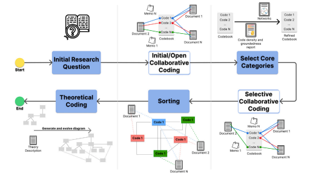

Harmonizing DevOps taxonomies—A grounded theory study
Resumo da Pesquisa
A adoção de DevOps modificou dramaticamente como as organizações da indústria de software colaboram para planejar, construir e entregar tecnologia. No entanto, as metodologias e estruturas adotadas continuam sendo muito fragmentadas através de diferentes fluxos de trabalho.
Este artigo apresenta uma extensa pesquisa empírica exploratória utilizando o método de teoria fundamentada ("Grounded Theory"). O objetivo é identificar perfis, categorias e as dinâmicas sociais da estrutura das equipes de DevOps nas empresas e no governo.
Principais contribuições:
- Uma taxonomia unificada dos papéis e responsabilidades
- Análise empírica dos anti-padrões organizacionais
- Desafios comuns de fluxo de comunicação em times multidisciplinares